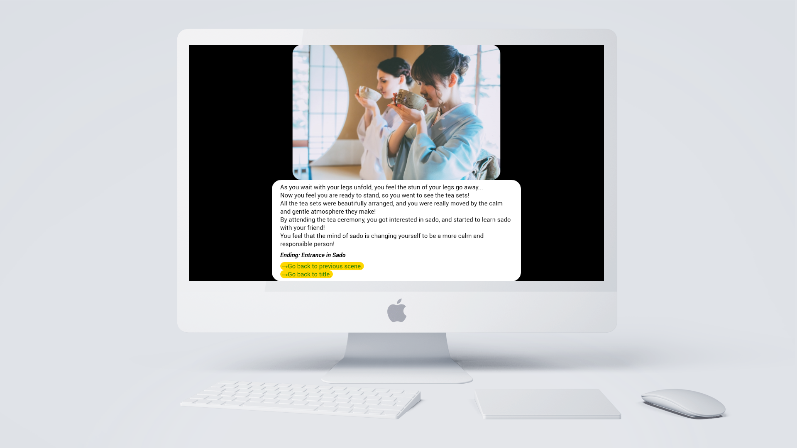
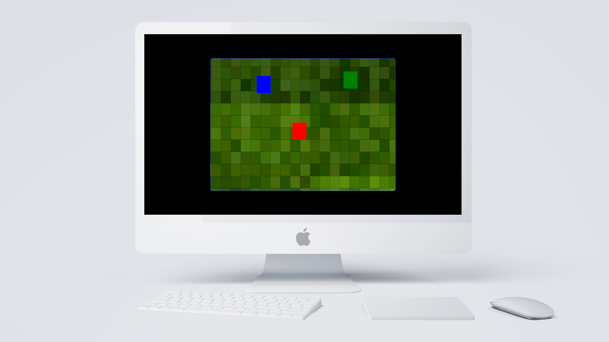

- 埼玉大学で人文系を広く学ぶ4年生(2022年4月現在)。
- 5歳から7歳までの2年半をアメリカのオハイオ州で過ごした。
- そこで身に着けた英語力で、2019年9月にTOEIC905点を獲得。
- 大学入学後は、自分に合った英語でWeb開発・デザインの独学を継続している。
- 夢は、日本で帰国子女向けのWebコミュニティを作ること。
Skills

- 日本に来てくれた留学生向けの、茶道のお茶会を体験してもらうゲーム。
- 茶会の特につまづきやすい箇所に選択肢を置き、茶会参加の敷居が低くなるように試みた。
- どの選択肢を選んでも、明るいジョークや心地よさのあるエンディングになるよう心掛けた。
- 自由な選択肢・多様な結末は、幼少期に遊んだデジモンの自由な進化から発想を得た。

- 追ってくる敵をかわしながら、ゴールの宝を目指す2Dアクションゲーム。
- 快適なプレイ体験を実現するため、UIデザインでは柔らかい質感を追求。
- ユーザーのCPUやメモリへの負担を最小限にするため、内部コードの洗練に力を注いだ。
- 幼少期に触れたGBCゼルダの伝説のような俯瞰型の世界観を、自由に動き回れるゲームを目指した。
- 宝・敵の場所を探知するレーダー機能を実装予定。